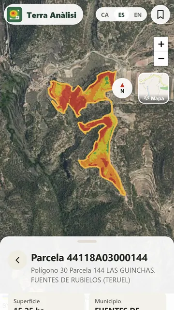
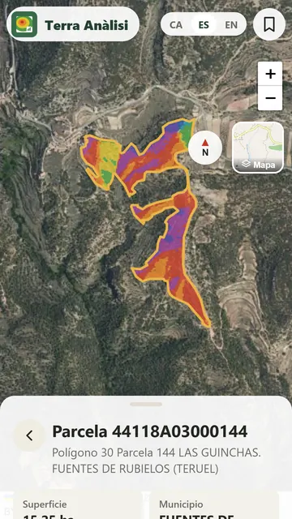
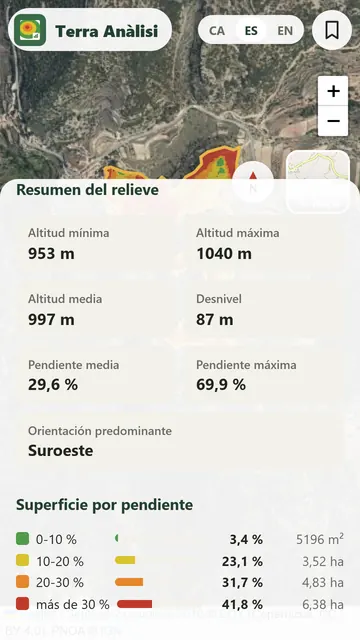
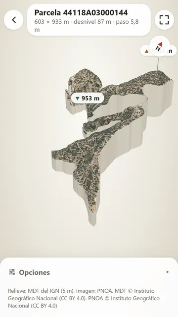

Terra Anàlisi: pendientes
Terra Anàlisi analiza el relieve de cualquier trozo de tierra: una parcela, una finca, una montaña o una zona que dibujes en el mapa.
Para la agricultura, la gestión forestal, la ingeniería, los peritajes o simplemente para conocer mejor tu terreno.
Funciona en el navegador del móvil o del ordenador, sin instalar nada. Pronto, también en Google Play.




Qué puedes hacer
-
Elige la zona como quieras
- Con la referencia catastral o la provincia, el municipio, el polígono y la parcela (España)
- Dibujando un rectángulo o una forma libre en cualquier lugar del mundo
- Buscando un lugar por su nombre
-
En pocos segundos tienes
- Mapas de altitud y de pendiente sobre la imagen aérea
- El resumen del relieve: altitudes mínima, máxima y media, desnivel y pendientes media y máxima
- La vista 3D del terreno, que puedes girar y ampliar
-
Con la versión Pro
- Mapas de orientación y de sombreado del relieve
- Superficie por clases de pendiente y por orientación
- Informe PDF con mapas, leyendas y tablas
- Zonas guardadas sin límite
-
Datos abiertos y de calidad
- En España, el Catastro, el modelo del terreno del IGN y las ortofotos del PNOA
- En el resto del mundo, datos de elevación abiertos e imágenes Sentinel-2
- Sin cuentas, sin anuncios y sin estadísticas
- Tus zonas se guardan solo en el dispositivo
Gratis, con un Pro de pago único
Analizar zonas, los mapas de altitud y de pendiente, la vista 3D y hasta tres zonas guardadas son gratis. La versión Pro es una compra única, sin suscripción.
Precio del Pro: 3,99 € (IVA incluido), pago único.
Los resultados son orientativos y salen de datos públicos: no sirven para trámites oficiales ni sustituyen un levantamiento topográfico.
Fuentes de los datos
- Catastro: Dirección General del Catastro
- Modelo del terreno y ortofotos del PNOA: Instituto Geográfico Nacional (IGN)
Terra Anàlisi es una app independiente de L'Abelluco: no representa a ninguna administración pública ni está vinculada a ella.